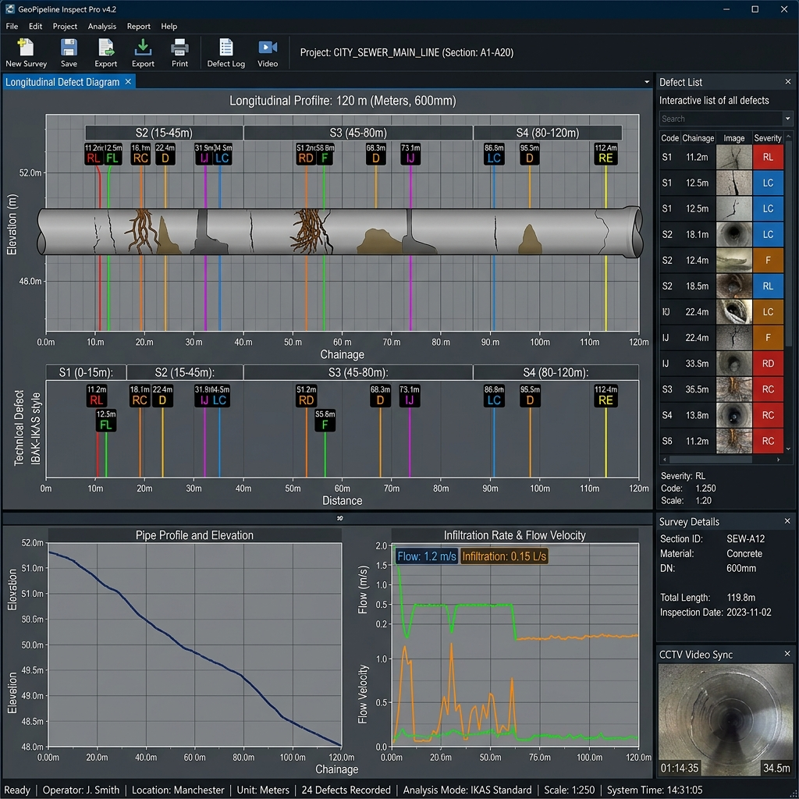
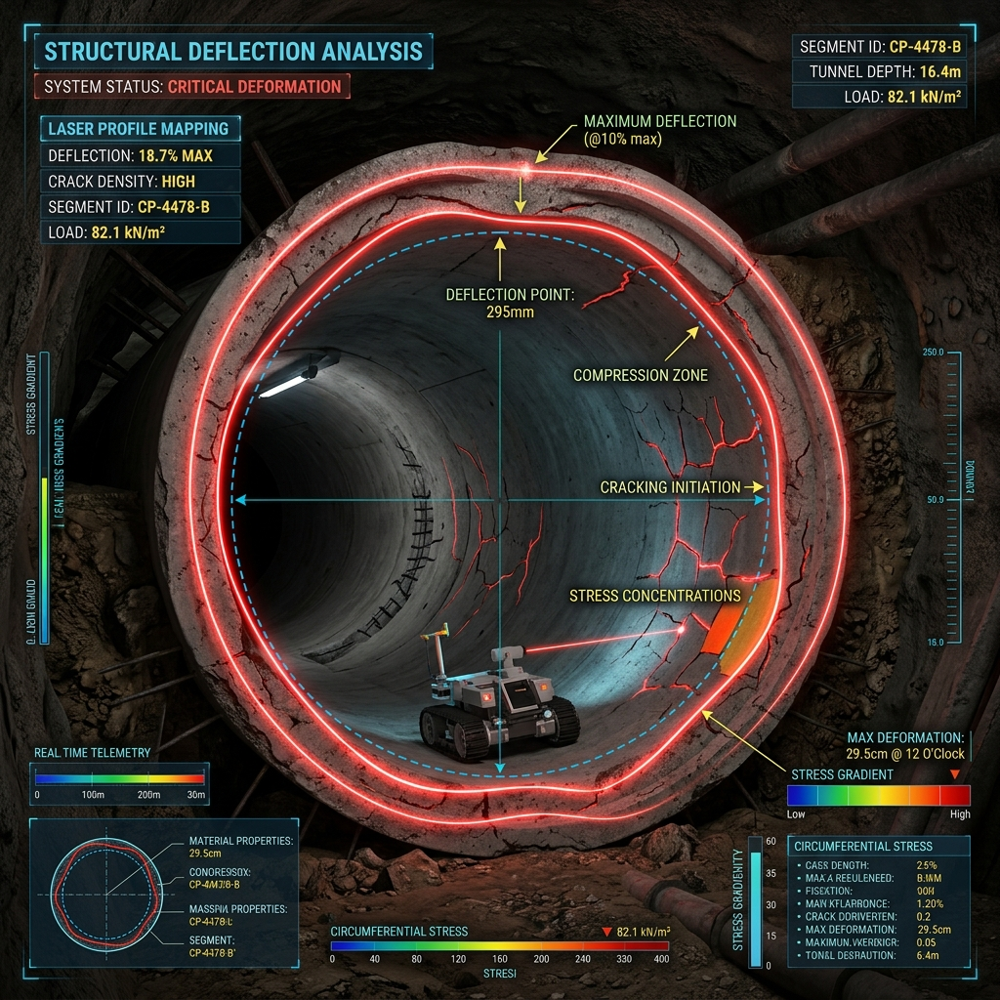

A Professional Portfolio showcasing my Education, Engineering projects, Technical skills, Infrastructure inspection experience, and Services.
I am a Master of Science in Transportation System Engineering and Management graduate currently working in pipeline rehabilitation and infrastructure inspection based in Abu Dhabi.
My core focus is on sewerage and stormwater pipeline CCTV inspection, condition assessment, and executing critical rehabilitation projects. I am passionate about infrastructure asset management and aim to grow into advanced roles related to technical project management and ERP systems.
Current Location
Transportation System Engineer
Integrated panoramic visuals demonstrating underground pipeline infiltration and structural integrity, captured from our primary diagnostic monitor.
Leading sewerage and stormwater pipeline CCTV inspections and condition assessments. Collaborating deeply with consultants and clients on infrastructure projects.


The aviation industry, prioritizing safety, adopted SMS to unify administration and improve safety globally. India, a council member, actively contributes to safety initiatives but faces coordination challenges. Richard de Neufville highlights the balance between safety and economics in airport performance.
Evaluating Indian aviation, this thesis focuses on qualitative elements and airport employees' satisfaction. The Calicut airport case study illustrates the structural hierarchy and regulatory aspects of SMS, assessing safety incidents from 2008 to 2021. It evaluates AAI and DGCA's SMS measures pre and post the Calicut incident, utilizing impact matrices to mitigate risks. Implementing SMS tools can further enhance air traffic safety, reducing accident rates effectively.
View Thesis DetailsUtilized Bentley software to extract geographic contour lines and execute calculation designs for railway infrastructure.
(Professional experience now extends to modern AutoCAD and Bentley GEMS Sewerages in pipeline rehabilitation).
Conducted an extensive city planning project to develop optimized bus schedules for the Nysa province. Deliberately selected this region for its unique socio-economic framework (free city bus transportation for car owners) to study modern urban transit dynamics. Evaluated general public transport accessibility standards across municipal city centers and major transit hubs.
Leveraged PTV VISSIM and VISUM software for advanced traffic simulations and spatial forecasting, presenting comprehensive technical breakdowns of urban traffic flow.
Finalized curriculum through a focused SMS thesis (mirroring the symposium theme), heavily influenced by a deep underlying passion for Urban Planning design.
Continuing Education Cell with KAL Automobiles
Presented functional engine models, vehicle dynamics, and diagnostic frameworks directly alongside industry professionals.
My Role: Project design, presenting at the Technical Symposium, and sourcing production/manufacturing clients.
Collaborated closely with key team members (Ananthu K.S for thesis preparation, with technical support from Ananth S.L, Anu Babu, and college lecturers).
Designed and built a functional ornithopter prototype focusing on aerodynamic flap-wing mechanics. Integrated ball-bearing speed adjustments to optimize flight performance.
Co-developed alongside Ananthu K.S.
Proficient in specialized CAD software and general engineering documentation.
Expertise in analyzing CCTV data for condition assessment and rehabilitation planning.
Strong background in site coordination, client relations, and technical reporting.
Knowledge of ERP systems related to inventory and supply chain management.
I am currently working as an Engineer in Pipeline Infrastructure Inspection and Rehabilitation Projects in Abu Dhabi. I am open to professional opportunities in Transportation Engineering, Infrastructure Engineering, Asset management, and Technical project roles.
Feel free to connect with me for professional opportunities or engineering discussions.
Your message was sent successfully. I will review it and get back to you shortly.